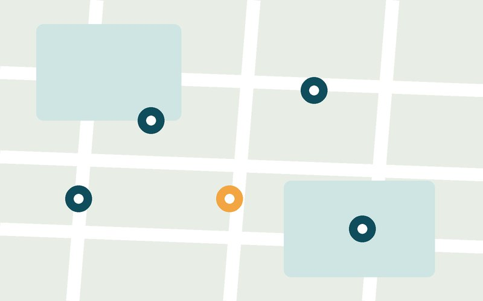

Utrecht University Library
University library · Drift 27, 3512 BR Utrecht
Noise level: Very quiet
Quiet places
Libraries and cafés in Utrecht to try for a calm conversation. Check lighting and noise yourself, then save a spot or plan your route.
3 example places in Utrecht, from public sources.
University library · Drift 27, 3512 BR Utrecht
Noise level: Very quiet

Library · Neude 11, 3512 AE Utrecht
Noise level: Quiet

Café · Vredenburgkade 11, 3511 WC Utrecht
Noise level: Lively

Real photos help you judge the light and noise before you go. Know another place? Tell us about it.